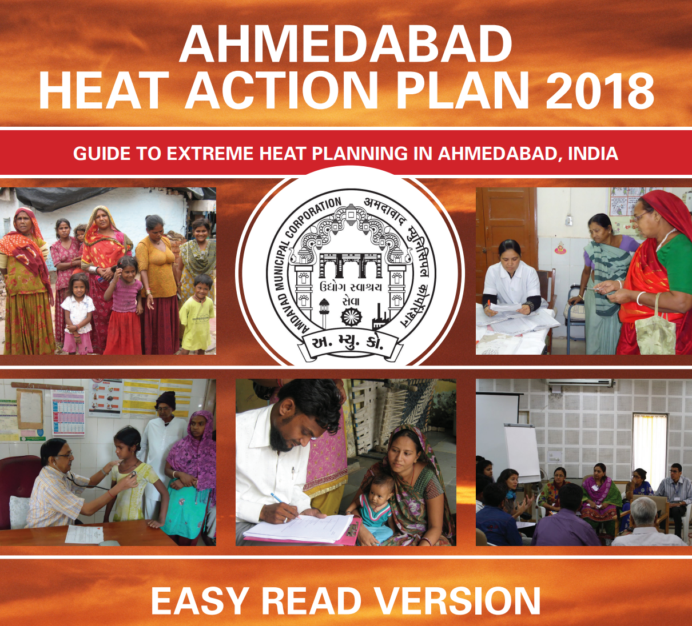
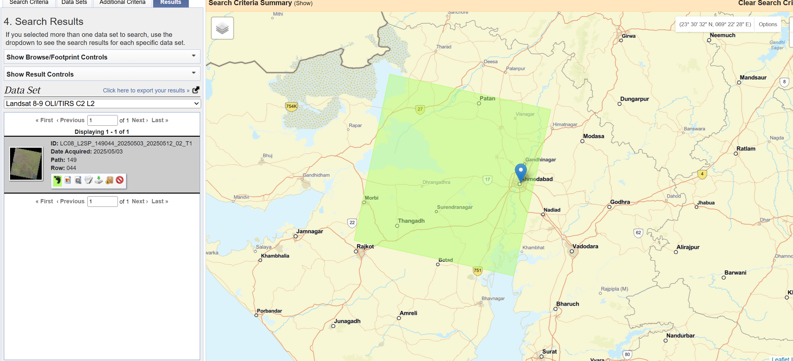
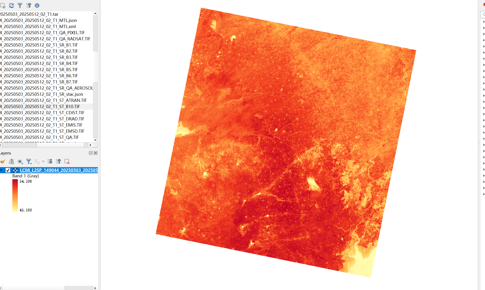
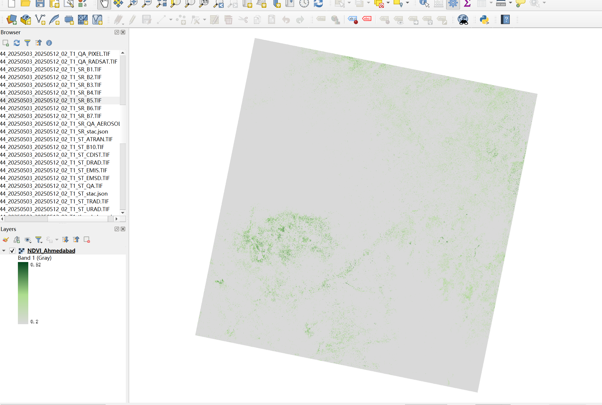
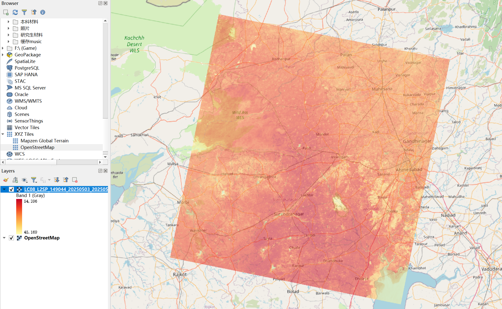

Week 4 & 5 Learning Diary: Earth Observation for Urban Policy
Case Study: Ahmedabad Heat Action Plan
1. Content Summary
1.1 Earth Observation in Policy Frameworks
Over the past two weeks, the module shifted from the physical fundamentals of satellite sensors to the critical intersection of Earth Observation (EO) and urban governance. I realized that EO is no longer a mere technological novelty; it is a fundamental requirement for developing smart and sustainable cities (Gerasopoulos et al. 2022). More importantly, I learned that the main task of this part of the module was not simply to describe EO datasets, but to evaluate which kind of remotely sensed evidence could assist a real policy challenge. This made me think more carefully about the relationship between a dataset, a policy goal, and the scale at which intervention takes place. It also helped me see more clearly how local policy challenges can be linked to wider sustainability agendas.
I learned that traditional urban planning often relied on sparse, ground-based surveys, but modern policy requires spatially continuous data to meet environmental challenges.
- Ecologically Sound Policies: According to (Wellmann et al. 2020), I found that the true value of remote sensing lies in its ability to move beyond basic land-cover mapping to assessing urban ecosystems.
- Urban Sustainability: Continuous monitoring allows us to evaluate whether interventions are actively advancing urban sustainability (Kadhim, Mourshed, and Bray 2016).
- Phenological Cycles: I learned that assessing vegetation health must account for seasonal variations, which requires careful selection of multi-temporal EO datasets (Jensen 2015).

1.2 Addressing Metropolitan Policy Challenges
I focused my case study on the Ahmedabad 2018 Heat Action Plan (HAP) (Figure 1). My core takeaway is that heatwaves do not affect the city uniformly; the Urban Heat Island (UHI) effect makes dense areas much hotter. This means that the policy problem is not only about extreme heat in general, but about identifying where heat exposure is concentrated and which groups may be more vulnerable. I was also struck by how vulnerability is intertwined with historical urban planning. As (Li et al. 2022) demonstrates, historical zoning often results in low-income neighborhoods experiencing higher temperatures. Figure 1 visually highlights this by focusing on vulnerable populations in informal settlements. For me, this case study showed that EO can support policy most effectively when it is used not just to map environmental conditions, but to reveal uneven risk across urban space.
I now see how the local implementation of the Ahmedabad HAP directly contributes to SDG Target 11.5 (reducing disaster deaths) and Target 13.1 (strengthening resilience).

2. Applications of the Content
2.1 Identifying and Evaluating EO Datasets
To assist the Ahmedabad HAP, I identified Landsat 8-9 (Path 149, Row 044) as the optimal dataset (Figure 2).
- The “Data Realization”: A major learning point occurred when I loaded the Thermal Band (ST_B10). The raw values were huge (45,169–54,396). I discovered that these values require conversion using the Landsat scale factor and offset to derive surface temperature in Kelvin (Figure 3):
\[ T(K) = DN \times 0.00341802 + 149.0 \]
- Evaluation: I learned that dataset choice always involves a trade-off between temporal frequency and spatial detail. For this case study, Landsat strikes an appropriate balance because it provides both thermal information and a spatial resolution that is still useful for interpreting urban patterns.
2.2 Demystifying NDVI for Policy Interventions
A key strategy in the HAP is mitigating heat through greening. However, I learned that raw NDVI maps are insufficient for policymakers. Following (Martinez and Labib 2023), I found that NDVI must be “demystified” into actionable categories.
As shown in Figure 4, I reclassified the derived NDVI (ranging from -0.32 to 0.52). I used values > 0.2 as a simple proxy for greener cover, while grey areas denote “Non-vegetated” surfaces. This allows planners to identify “greening deserts” more easily.

2.3 Workflow and Policy Matrix
During the workshop, I developed a conceptual workflow to translate raw radiance into solutions. This simple matrix helped me connect each policy objective with a specific EO indicator and showed that remote sensing becomes more meaningful when it is tied to a concrete decision-making purpose.
| Policy Objective | Required EO Metric | Satellite Source | Policy Application |
|---|---|---|---|
| Identify Heat Vulnerability | Land Surface Temperature (LST) | Landsat 8/9 (TIRS) | Directing emergency services to maximum LST zones (Figure 5). |
| Urban Greening Assessment | Classified NDVI | Landsat 8 / Sentinel-2 | Identifying neighborhoods lacking canopy for priority planting (Figure 4). |


3. Personal Reflection
3.1 The Gap Between Academic Remote Sensing and Policy
The most profound realization from these weeks is the friction between scientific perfection and policy utility. Previously, I focused purely on minimizing errors. However, I now see that policymakers often need “good enough” data delivered at the right time. A city planner might prioritise more frequent observations over higher spatial resolution when a heatwave response is time-sensitive.
3.2 Rethinking Data Justice
The overlay analysis in Figure 5 changed my perspective. I learned that a thermal hotspot is not just a reflection of physics; it is a visual manifestation of historical inequality.
Applying EO data requires us to combine raster data with socio-economic demographics. Another limitation I identified is that the Landsat scene covers a much broader regional footprint than the city; further clipping would be needed for specific targeting. I also realised that a single image can only capture one moment of heat conditions, which means that future analysis would benefit from comparing multiple dates rather than relying on one scene alone. If I were to extend this work, I would combine thermal and greenness layers with ward-level demographic data so that the results could better support targeted public health intervention. My goal moving forward is to ensure my technical workflows genuinely contribute to equitable and ecologically sound urban governance.